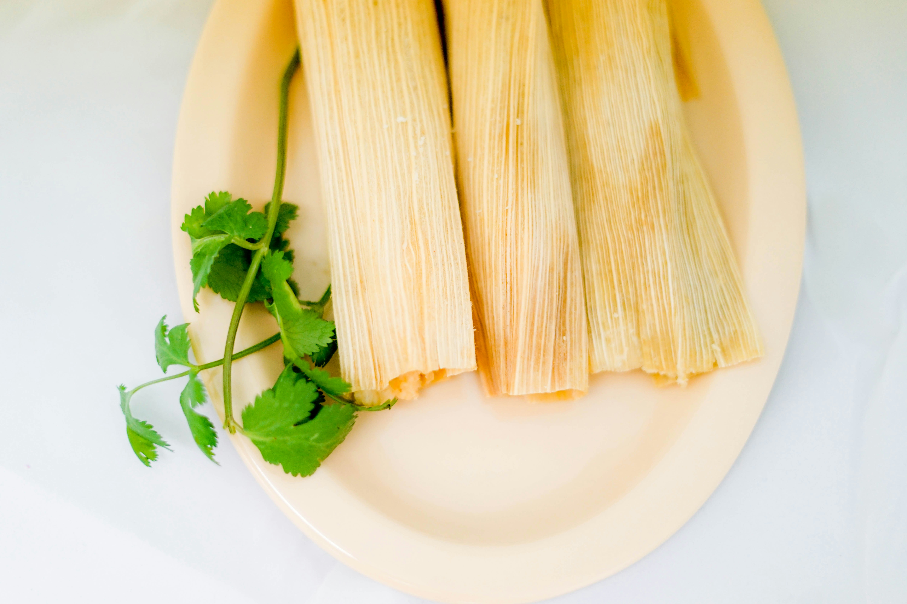

Homepage
Homemade Tamales

Description:
This recipe brings the famous mexican dish to your own home with a quick and easy to follow recipe.
The tender pork is wrapped in masa and corn husks with a red chile sauce on top to deliver a
unforgettable taste. Perfect dish to make at the beginning of the week and enjoy throughout!
Ingredients:
Filling:
- 1 1/4 lbs of pork loin
- 1 large onion halved
- 1 clove garlic
Chile Sauce:
- 4 dried chili peppers (such as guajillo or ancho)
- 1 1/2 teaspoons of salt
Husks and Dough:
- 1(8 ounce) package dried corn husks
- 1(10.5) can beef broth, divided
- 2/3 cup lard
- 2 cups masa harina
- 1 teaspoon baking powder
- 1/2 teaspoon salt
- 1 cup sour cream
Steps:
- Place pork, onion, and garlic in a Dutch oven.
Add enough water to cover; bring to a boil over medium-high heat.
Reduce the heat to low; simmer pork until cooked through and tender,
about 2 hours.
- Remove stems and seeds from chiles; transfer to a medium saucepan with 2 cups water.
Simmer, uncovered, for 20 minutes. Remove from heat to cool.
- Transfer chiles and cooking liquid to a blender; blend until smooth.
Strain sauce through a fine-mesh sieve into a bowl; stir in salt.
Discard contents of strainer.
- Remove pork from the pot; discard onion and garlic. Shred pork using two forks;
mix in 1 cup chile sauce; set filling aside. Reserve remaining chile sauce for serving.
- Soak corn husks in a bowl of warm water until softened, about 30 minutes.
- Meanwhile, beat 1 tablespoon broth with lard in a large bowl until fluffy.
- Combine masa harina, baking powder, and salt in another large bowl; stir into lard mixture,
adding more broth as needed to form a soft, spongy dough.
- Remove husks from water; pat dry. Spread about 2 tablespoons of dough, about 1/4-inch thick,
onto the center of each husk, leaving a 1-inch border on sides and top.
- Spoon 1 tablespoon pork filling over dough. Fold sides of husk toward the center,
then fold up the bottom to seal. Repeat with remaining husks, dough, and filling.
- Arrange tamales upright in a steamer basket over simmering water.
Cover with a damp towel or extra husks.
Steam until dough is firm and pulls away easily from husks, about 1 hour.
- Unwrap the tamales; drizzle with remaining chile sauce. Top with sour cream.
Alternatively, stir chile sauce and sour cream together before drizzling for a creamy option.
- Enjoy the authentic dish to the fullest extent!